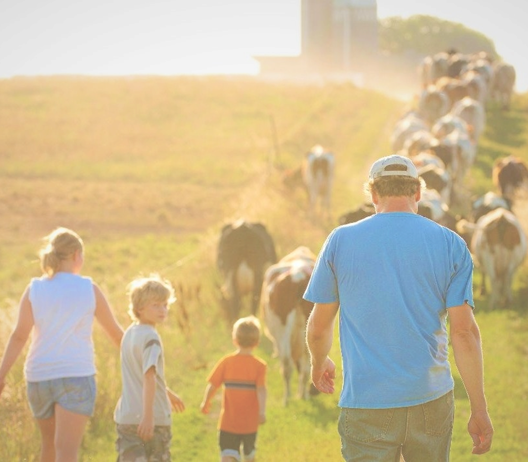
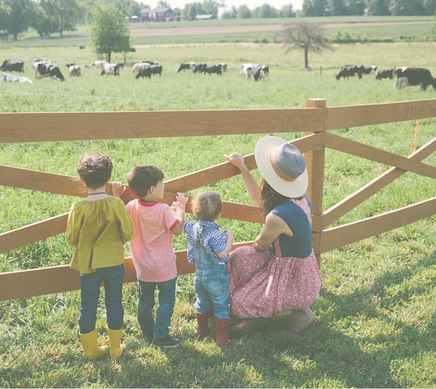

О ПРОЕКТЕ
ДЕЛО, КОТОРЫМ МЫ ЗАНИМАЕМСЯ, — НОВОЕ И СЛОЖНОЕ, НО СТОЛЬ НЕОБХОДИМОЕ В НЫНЕШНЕЕ ВРЕМЯ. НАДЕЕМСЯ, ЧТО ВМЕСТЕ МЫ БУДЕМ РАЗВИВАТЬ ДЕРЕВНЮ XXI ВЕКА, ЧТОБЫ У КАЖДОГО БЫЛА ВОЗМОЖНОСТЬ ИМЕТЬ НА СВОЁМ СТОЛЕ ЗДОРОВЫЕ

ДОЛГАЯ И СЧАСТЛИВАЯ ЖИЗНЬ БЕЗ БОЛЕЗНЕЙ, В ЗДРАВОМ УМЕ — ЖЕЛАНИЕ КАЖДОГО ЧЕЛОВЕКА. НО ПЛОХАЯ ЭКОЛОГИЯ, СТРЕСС, НЕПРАВИЛЬНЫЙ ОБРАЗ ЖИЗНИ, НЕКАЧЕСТВЕННАЯ ЕДА СНИЖАЮТ ВЕРОЯТНОСТЬ ТАКОЙ ПЕРСПЕКТИВЫ. КАК БЫТЬ? КОНЧЕНО ЖЕ, СТОИТ ИСКЛЮЧИТЬ ВСЕ НЕГАТИВНЫЕ ФАКТОРЫ, И ОСОБЕННОЕ ВНИМАНИЕ УДЕЛИТЬ ВЫБОРУ ПРОДУКТОВ ПИТАНИЯ. ВЕДЬ НАУЧНЫЕ ИССЛЕДОВАНИЯ ПОДТВЕРЖДАЮТ: ПИТАНИЕ ОКАЗЫВАЕТ СИЛЬНЕЙШЕЕ ВЛИЯНИЕ НА ПРОДОЛЖИТЕЛЬНОСТЬ И КАЧЕСТВО НАШЕЙ ЖИЗНИ. КАК УЗНАТЬ, ЧТО МЫ ЕДИМ? ГДЕ И КАК ПРОИЗВОДЯТСЯ ПРОДУКТЫ? ГДЕ И КАК ИХ КУПИТЬ? ПОУЧАСТВОВАТЬ В ПРОИЗВОДСТВЕ И ПОЛУЧИТЬ ЛУЧШИЕ ЦЕНЫ. ВОТ ЭТИ ЗАДАЧИ МЫ РЕШИМ ДЛЯ ВАС!!!
ВМЕСТЕ МЫ ВНЕСЕМ ОГРОМНЫЙ ВКЛАД В РАЗВИТИЕ ДЕРЕВНИ В XXI ВЕКЕ
ПРИОБРЕТАЯ ПРОДУКТЫ В НАШЕМ СЕРВИСЕ ВЫ НА ПРЯМУЮ ВЛИЯЕТЕ НА РАЗВИТИЕ НЕ БОЛЬШИХ ХОЗЯЙСТВ КОТОРЫЕ СТРЕМЯТСЯ ПРОИЗВОДИТЬ ПРОДУКТЫ ИМЕННО ДЛЯ ВАС, ПРИ ЧЕМ СТАРЫМ ДЕДОВСКИМ СПОСОБОМ, В СОВРЕМЕННОМ МИРЕ ЭТО НАЗЫВАЕТСЯ ЭКСТЕНСИВНОЕ СЕЛЬСКОЕ ХОЗЯЙСТВО.

ВЫ СМОЖЕТЕ НЕ ТОЛЬКО ПРИОБРЕСТИ ПРОДУКТЫ ПИТАНИЯ, А ПОЛНОСТЬЮ ПОГРУЗИТЬСЯ В ИХ ПРОИЗВОДСТВА ПРЯМО НА ПОДВОРЬЕ ПРОИЗВОДИТЕЛЯ. НА ФЕРМЕ ВЫ МОЖЕТЕ ПРОВЕСТИ ОТ НЕСКОЛЬКИХ ЧАСОВ ДО НЕСКОЛЬКИХ НЕДЕЛЬ. ОТДЫХАЯ И ЗАНИМАЯСЬ ТЕМ ДЕЛОМ КОТОРОЕ ВАМ ИНТЕРЕСНО. В ВАШЕМ РАСПОРЯЖЕНИИ БУДЕТ ПИТАНИЕ, ДОМ, БАНЯ С ВЕНИКАМИ, ЛОДКА, МОТОР К ЛОДКЕ, СНАСТИ ДЛЯ РЫБНОЙ ЛОВЛИ, ВЕЛОСИПЕДЫ, КВАДРОЦИКЛ, РЕСТОРАН ВЫСОКОЙ ДЕРЕВЕНСКОЙ КУХНИ С ГАЗОВЫМ АМЕРИКАНСКИМ ГРИЛЕМ, А ГЛАВНОЕ МНОГО НЕЗАБЫВАЕМЫХ ЭМОЦИЙ